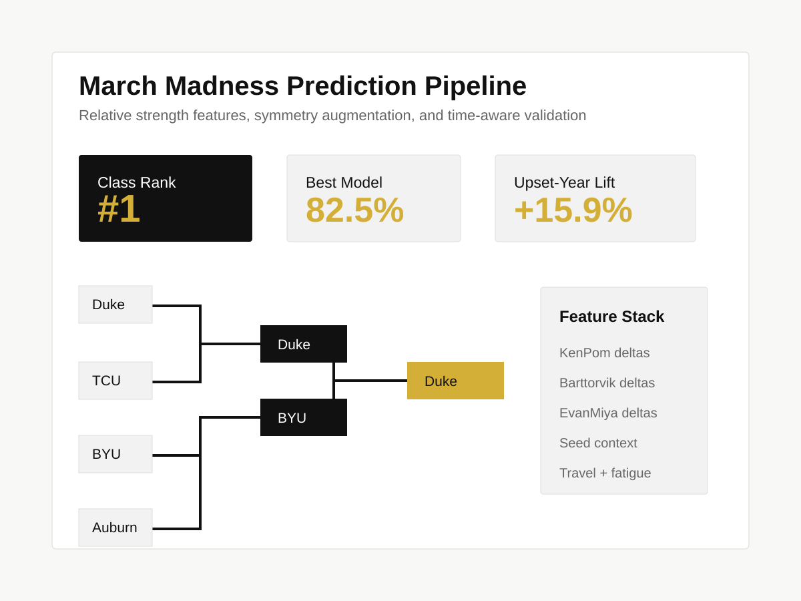

Machine Learning · Sports Analytics · Competition Winner
March Madness Prediction Pipeline
A tournament prediction pipeline built around relative-strength features, symmetry augmentation, and time-aware validation. The model won a class competition against 56 other students for best prediction accuracy.

Problem
March Madness prediction is noisy because the tournament is single-elimination, the sample size is small, and upset dynamics matter more than they do in long regular seasons. A model that only follows seed rank can look strong in chalk-heavy years but miss the places where predictive value actually exists.
The goal was to build a pipeline that could predict individual matchups and complete brackets while avoiding temporal leakage. For the class competition, accuracy mattered, but I also wanted the modeling approach to be defensible.
Approach
Relative Features
Converted raw team metrics into deltas between Team A and Team B, letting the model learn matchup advantage directly.
Symmetry Augmentation
Recorded each game twice, A vs B and B vs A, with negated features. This doubled the training data and stabilized predictions.
Temporal Validation
Used TimeSeriesSplit to keep future tournament outcomes out of earlier training folds.
The dataset used historical seasons from 2016-2025 and combined advanced sources including KenPom, Barttorvik, TeamRankings, EvanMiya, RPPF, and Heat Check. I also included tournament context, seed information, travel distance, timezone changes, and rating momentum.
Modeling
- Feature selection: SelectFromModel with XGBoost identified the top 25 predictive metrics.
- Optimization: Optuna ran Bayesian hyperparameter search across 50 trials per model.
- Model comparison: SGDClassifier reached 82.5% test accuracy, Logistic Regression reached 80.2%, and a seed baseline reached 74.6%.
- Bracket generation: The final pipeline could predict a single matchup or recursively advance teams through a full bracket.
The SGDClassifier performed best overall and was especially useful in upset-heavy years. Logistic Regression produced more stable probabilities but tended to be more conservative.
Result
The pipeline won the class competition against 56 other students for best prediction accuracy. In the upset-heavy 2024 tournament, the SGD model produced a 15.9% lift over a seed-only baseline.
The main modeling lesson was that careful feature construction beat brute-force complexity. Expanding the search space too far increased overfitting because the tournament sample is small, while relative-strength features and symmetry augmentation gave the model a cleaner signal.
Caveats
The test set is small, and tournament results are inherently stochastic. The model also cannot account for late injuries, locker-room dynamics, coaching changes, or other qualitative information that can matter in March.
For future versions, I would add uncertainty intervals to bracket outputs and separate probability calibration from winner selection so the system can be evaluated beyond raw accuracy.